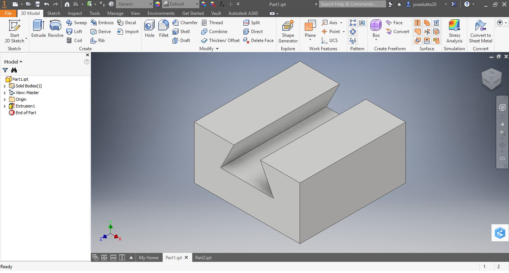
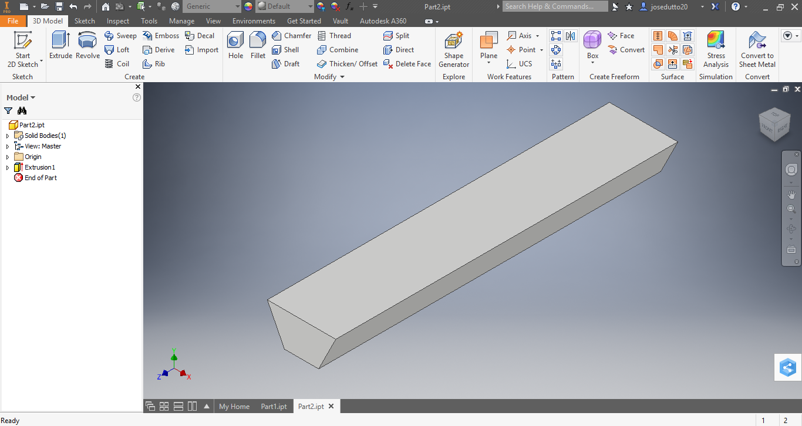
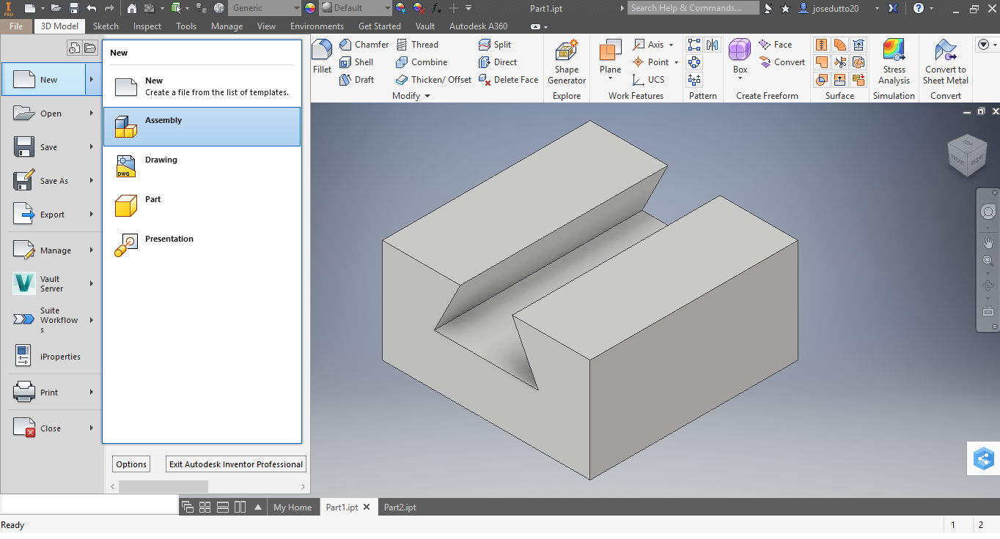
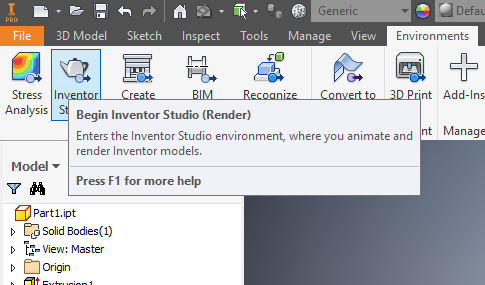
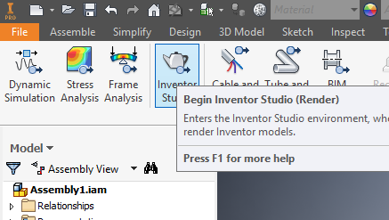

Using inventor studio
A quickstart guide
Contents:What this guide covers
Rendering
Preparing cameras
Understanding iterations
Animation
Basic Animation tutorial
Troubleshooting
What this guide covers
In this guide you will learn the basics of using inventor studio to render images of your creations, at the end you will understand how to operate the camera, and will have some basic understanding of animation, the information here is student written and the information not be complete or relevant in the most recent vesion of inventor studio.Rendering
Rendering is when you essensily, take a photograph of your inventor project using the image rendering tool. To start your process, open your part in inventor, navigate to the inventor studio button and click it, inventor studio will load. From here select the view you want to capture, you can use the free rotate tool or the use the navagation wheel, once you're facing the way you want to, press the "Render Image" Button in the upper left, select start with the default values and watch the image render. Note: You may notice your part will be renderd with a 3d perspective, rember that inventor studio is for showing the final product or refined form of a project. If you must project your part orthographicly navigate to [window] and change the droptown from "perspective" to "orthographic".To Start
First take your parts you want to animate, we'll asume you've already modeld and added materials to them (materials can be added from the droptown in the top)
Here we have two parts, both fit together, to start our rendering process we are going to put them in an assembly

You dont have to do this step, unless you want animation in your parts.
Weather you are in the part view or the assembly view the button to open the studio will be under the enviorments tab.

Studio(above) Part(below)

Preparing Cameras
If you've ever worked with Blender, or even some real life photograpy, you know you need to use a camera, there are two ways to render an object, you can use the camera poition of your screen (Simply use the navagation box to find the view you want) or you can create a camera by [clicking here what?] cameras can be moved, and adjusted by pressing right click, each camera will have a focal point, and a viewpoint, both can be changed to get the desired picture.Remember, a 2d screen has no depth to it, make sure your camera is facing the right way by both navagating around it when moving points, and checking its position by pressing the render button and selecting the camera.